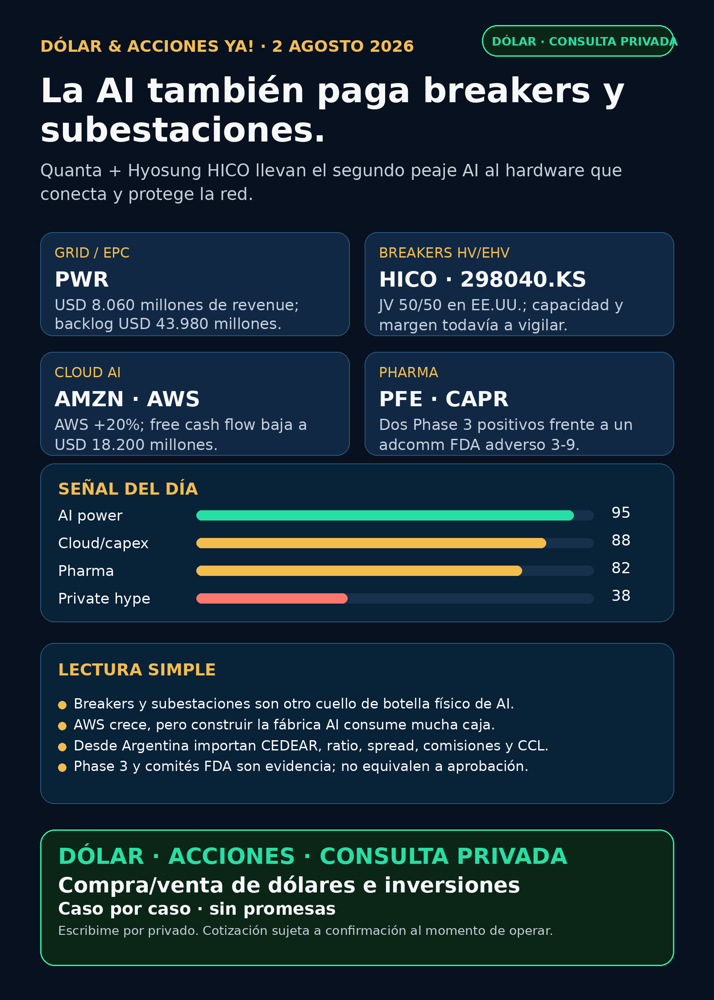

La AI también paga breakers y subestaciones.
Quanta y Hyosung HICO llevan el segundo peaje AI a breakers y subestaciones; AWS muestra demanda y costo de capital; pharma separa evidencia de relato.
Texto WhatsApp
Placa del día

Dólar & Acciones YA — Stock Radar — 02/08
Fecha de edición: 2026-08-02. Corte público: 08:46 ART. Research educativo para Argentina y carteras globales. No es recomendación personalizada de compra ni de venta.
Lectura simple del día
La AI no se enchufa sola. La señal más concreta de hoy viene de Quanta Services (PWR): además de reportar revenue trimestral de USD 8.060 millones y backlog de USD 43.980 millones, acordó un joint venture 50/50 con Hyosung HICO para fabricar breakers de alta y extra-alta tensión en Estados Unidos. En criollo: el cuello de botella ya no es sólo conseguir generación o transformadores; también hacen falta subestaciones, interruptores gigantes, switchgear, obra y ejecución.
La segunda lección aparece en Amazon (AMZN). AWS creció 20%, pero el flujo de caja libre de los últimos doce meses cayó de USD 56.000 millones a USD 18.200 millones por la inversión en AI. La demanda existe; también existe la factura de construirla. Revenue, EPS y revaluaciones privadas no son lo mismo que caja operativa.
La tercera lección es regulatoria: Pfizer (PFE) informó dos Phase 3 positivos para LITFULO en vitiligo, mientras Capricor (CAPR) recibió un voto adverso 3-9 del comité asesor de FDA para Deramiocel. En biotech, “necesidad médica” no reemplaza evidencia suficiente.
Las señales están ordenadas por valor educativo y calidad de evidencia, no como ranking de compra. Buena empresa ≠ buena inversión al precio actual ≠ buen instrumento para Argentina ≠ tamaño correcto dentro de una cartera.
Capa Argentina: dólar, MEP/CCL y CEDEARs
Datos públicos consultados a las 08:46 ART del domingo 02/08:
- BlueLytics: dólar oficial vendedor ARS 1.511,00 y blue vendedor ARS 1.560,00; última actualización 31/07 19:45 ART.
- CriptoYa: USDT ask ARS 1.580,49 y bid ARS 1.575,19; actualización 02/08 08:45 ART.
- MEP AL30 24hs ARS 1.505,41 y CCL AL30 24hs ARS 1.580,51; ambos tienen timestamp de cierre del 31/07 16:59 ART. No son cotizaciones intradiarias del broker.
En criollo: el MEP permite dolarizar pesos mediante bonos dentro de Argentina. El CCL conecta precios locales con el exterior y suele impactar en los CEDEARs. Un CEDEAR representa una fracción de una acción extranjera, pero tiene ratio, spread —diferencia entre mejor comprador y vendedor—, liquidez, comisiones y CCL implícito. Como hoy es domingo, cualquier decisión real exige revalidar precio, book y spread cuando abra el mercado.
PWR, AMZN, PFE, LMT, AAPL, HOOD y CAPR tienen instrumentos globales. CEDEAR, ratio, volumen, spread y disponibilidad local no fueron revalidados en esta corrida. Sin ese chequeo quedan como radar internacional/global o proxy local pendiente, no como ejecución Argentina.
Tesis central
El segundo peaje de AI se amplía de transformadores a breakers, subestaciones y ejecución EPC. Quanta aporta construcción e integración; Hyosung HICO aporta tecnología y fabricación de equipamiento HV/EHV. El moat —ventaja difícil de copiar— está en capacidad industrial, know-how, certificación, supply chain y ejecución a tiempo.
El caveat importa: backlog no es caja inmediata y un joint venture no garantiza volumen, margen ni plazo. Hay que vigilar entrada en producción, capacidad, pedidos, conversión de backlog y costos de integración. La tesis se fortaleció; el precio y el instrumento siguen siendo decisiones humanas separadas.
Señales educativas del día
1. Grid, breakers y subestaciones — Quanta Services (PWR) + Hyosung HICO
- Qué pasó: Q2 revenue de USD 8.060 millones, net income atribuible de USD 309 millones y backlog de USD 43.980 millones. Quanta acordó un JV 50/50 con Hyosung HICO para fabricar breakers HV/EHV en Estados Unidos y adquirió Dynamic Systems por aproximadamente USD 1.350 millones.
- Fuente primaria (30/07): SEC EX-99.1: https://www.sec.gov/Archives/edgar/data/1050915/000119312526324855/d56853dex991.htm
- Lectura en criollo: la AI necesita hardware que conecte y proteja redes eléctricas; no alcanza con generar más energía.
- Riesgo: backlog no equivale a caja; faltan capacidad operativa del JV, pedidos, margen y calendario.
- Accionable internacional/global:
PWRcotiza en Estados Unidos; Hyosung Heavy Industries cotiza en Corea como298040.KS. - Accionable local Argentina: CEDEAR/ratio/spread de
PWRy acceso real a Corea no verificados. Estado local: no accionable por ahora. - Estado: señal fortalecida.
2. Transformadores — HD Hyundai Electric (267260.KS)
- Qué pasó: medios coreanos informaron que la planta de Alabama produjo su transformador UHV número 1.000; ChosunBiz indicó 40% de market share UHV en Estados Unidos y un plan de capacidad de USD 300 millones hacia 2030.
- Fuente secundaria verificada (02/08): ChosunBiz: https://biz.chosun.com/en/en-industry/2026/08/02/PXF53NITYJDTDOACVFLF2GTG3U/
- Caveat: no se localizó todavía el comunicado primario de la empresa. Las cifras quedan como vigilar / auditar primaria, no claim cerrado para ejecutar.
- Accionabilidad: Corea/global; liquidez, broker y acceso Argentina pendientes. No es un CEDEAR confirmado.
- Estado: radar alto, verificación primaria pendiente.
3. Cloud / AI infra — Amazon (AMZN)
- Qué pasó: Q2 sales de USD 167.700 millones (+17%), AWS de USD 37.200 millones (+20%) y AWS operating income de USD 13.800 millones. El trailing free cash flow cayó a USD 18.200 millones desde USD 56.000 millones por inversión AI. Una ganancia no operativa de USD 11.500 millones vinculada a Anthropic elevó net income.
- Fuente primaria (31/07): SEC EX-99.1: https://www.sec.gov/Archives/edgar/data/1018724/000101872426000024/amzn-20260630xex991.htm
- Lectura en criollo: AWS confirma demanda, pero construir la fábrica AI consume caja. La revaluación de Anthropic no es caja del negocio diario.
- Riesgo: capex alto, retorno demorado y calidad del EPS. Comprar
AMZNtampoco equivale a comprar Anthropic directamente. - Accionabilidad: acción pública global; vía CEDEAR local requiere precio, ratio, spread y volumen actuales.
- Estado: fortalece demanda / vigilar capex y calidad de ganancia.
4. Pharma — Pfizer (PFE) / LITFULO
- Qué pasó: TRANQUILLO y TRANQUILLO 2 alcanzaron mejoras estadísticamente significativas y clínicamente relevantes en vitiligo no segmentario. Pfizer informó seguridad consistente y planea filings globales para adultos.
- Fuente primaria (31/07): Pfizer Newsroom: https://www.pfizer.com/news/press-release/press-release-detail/pfizer-announces-positive-topline-phase-3-results-litfulo
- Lectura en criollo: dos estudios positivos fortalecen el activo, pero todavía no son aprobación para vitiligo ni revenue asegurado.
- Riesgo: revisión regulatoria, label, competencia, cobertura y adopción.
- Accionabilidad:
PFEglobal; CEDEAR/ratio/spread local no revalidado. - Estado: señal fortalecida.
5. Biotech de riesgo binario — Capricor (CAPR)
- Qué pasó: el comité asesor FDA votó 3-9 contra que la evidencia sostenga eficacia de Deramiocel para cardiomiopatía en distrofia muscular de Duchenne. El voto no es vinculante; PDUFA: 22/08/2026.
- Fuente primaria (29/07): SEC EX-99.1: https://www.sec.gov/Archives/edgar/data/1133869/000110465926088667/capr-20260729xex99.htm
- Lectura en criollo: una enfermedad grave no baja el estándar de evidencia. Una caída de precio tampoco transforma automáticamente el activo en oportunidad.
- Riesgo: decisión regulatoria binaria, financiación y concentración en un solo activo.
- Accionabilidad: instrumento global especulativo; local no verificado.
- Estado: tesis debilitada / alto riesgo.
6. Defensa aérea — Lockheed Martin (LMT), Patriot PAC-3 MSE
- Qué pasó: un marco de hasta USD 58.600 millones contempla hasta 1.970 interceptores PAC-3 MSE para FY2026–2033.
- Fuente secundaria fuerte (30/07): Defense News / Reuters: https://www.defensenews.com/industry/techwatch/2026/07/30/us-strikes-586-billion-patriot-missile-deal-amid-rising-stockpile-concerns/
- Caveat: términos, calendario de entrega y funding final siguen sujetos a negociación y apropiaciones. La primaria
war.govfue descubierta, pero no devolvió contenido verificable en esta corrida. - Lectura en criollo: es una señal de producción multianual de guerra física, no USD 58.600 millones de revenue garantizado hoy.
- Accionabilidad:
LMTglobal; instrumento local pendiente de validar. - Estado: fortalece tesis / auditoría primaria pendiente.
7. Watchlist — Apple (AAPL) y Robinhood (HOOD)
- Apple: Q3 FY2026 revenue de USD 94.040 millones, services de USD 27.420 millones y EPS diluido de USD 1,57. Una reversión arancelaria extraordinaria sumó aproximadamente USD 0,11 al EPS y 1,9 puntos porcentuales al gross margin. Fuente primaria: https://www.sec.gov/Archives/edgar/data/320193/000032019326000018/a8-kex991q3202606272026.htm
- Lectura AAPL: negocio fortalecido; moat AI todavía no probado y parte del EPS fue extraordinaria.
- Robinhood: Q2 total net revenue de USD 1.308 millones, transaction revenue de USD 776 millones y net income atribuible de USD 561 millones. Fuente primaria: https://www.sec.gov/Archives/edgar/data/1783879/000178387926000114/hood-20260630.htm
- Lectura HOOD: escala como broker/crypto rails, pero depende del ciclo de trading y mezcla crecimiento orgánico con adquisiciones.
- Estado: ambas en seguimiento; no hay decisión de inversión sin precio, valuación e instrumento local.
Watchlist priorizada de hoy
Ordenada por valor educativo/señal, no como ranking de compra.
- AAPL: señal de negocio positiva, con ajuste extraordinario que obliga a normalizar EPS.
- HOOD: señal fortalecida por resultados; vigilar ciclicidad de trading/crypto y adquisiciones.
- RKLB: discovery de tres launches dedicados para iQPS en dominio oficial, pero la URL quedó detrás de Cloudflare y no se verificó sustancia en esta corrida. No verificado hoy; no elevar como claim nuevo.
- NVDA, PLTR, TSM, MU, GOOGL/GOOG, TSLA, ASML: revisados, sin señal primaria nueva más fuerte que las ya indexadas. No rellenar con precio de mercado cerrado.
- SNDK, CBRS, AVGO: revisados; sin filing nuevo material superior para elevar.
- RVI: hubo una venta chica del sponsor; sigue siendo fondo cerrado, no operating company. Requiere NAV, premium/descuento, holdings, volumen, spread y acceso actualizados.
- Gold /
GLD/GOLD/B: metal, ETF y tickers no son equivalentes.Bno es Broadcom —Broadcom esAVGO—. Sin instrumento exacto no se publica precio ni accionabilidad.
Energía, grid y power hardware
Grid, transformadores y equipamiento
PWR+ Hyosung HICO: señal principal por breakers HV/EHV y subestaciones.- HD Hyundai Electric (
267260.KS): señal industrial fuerte con primaria pendiente. - Carril obligatorio revisado: Hitachi Energy/Hitachi (
6501.T/HTHIY), Siemens Energy (ENR.DE, no Siemens AG), GE Vernova (GEV), Hyosung Heavy (298040.KS), Virginia Transformer y Delta Star. - No apareció una señal primaria fresca más material en esos nombres. Corea/OTC no es acceso simple desde Argentina; Virginia Transformer y Delta Star siguen privadas y no accionables directas.
Nuclear y uranio
- Westinghouse: Cameco/Brookfield informaron confidential filing para una posible IPO. No hay tamaño, precio ni fecha; no accionable por ahora.
CCJ/BNson proxies públicos imperfectos. Fuente primaria: https://www.sec.gov/Archives/edgar/data/1009001/000106299326011800/form6k.htm
Energía Argentina
- Pampa Energía (
PAMPlocal /PAMADR): el handover protocol con Fénix habilita desde agosto la transferencia de producción de Rincón de Aranda y Anticlinal Campamento. Fuente primaria: https://www.sec.gov/Archives/edgar/data/1469395/000129281426004020/ex99-1.htm - Lectura: ejecución operativa de Vaca Muerta, no promesa narrativa. Falta medir aporte a producción, caja y guidance.
- YPF, TGS/TGSU2, CEPU y VIST: revisados; sin señal fresca más fuerte que los filings ya indexados.
Generación, utilities y cooling
GEV,NEE/D,VST/CEGyMODsiguen en radar estructural por generación, grid y refrigeración. No apareció primary nuevo superior; Amazon refuerza la demanda y el costo del buildout.
Pharma / salud
PFE: LITFULO Phase 3 positivo; fortalece, todavía filing/regulación.NVO: ZEUS informó reducción de 20% en MACE con semaglutida en 7.964 adultos sin diabetes: 4,8% vs 6,0%. Fuente primaria: https://www.sec.gov/Archives/edgar/data/353278/000117184326005109/f6k_073126.htmAZN: Datroway + rilvegostomig cumplió PFS en AVANZAR; OS inmadura. Fuente primaria: https://www.sec.gov/Archives/edgar/data/901832/000165495426007050/a7288o.htmCAPR: debilitada por adcomm 3-9; alto riesgo. No tratar precio caído como tesis.LLY,MRKy resto de GLP-1/oncología: revisados; sin catalyst primario fresco más fuerte. Se descartaron titulares reciclados o no verificados.
Radar amplio fuera de watchlist
- Defensa/guerra física:
AVAV, GE Aerospace (GE),RTX,LMT,NOC,GD,HWM,KTOS,BA,ITA/XARrevisados. La señal nueva más fuerte fue Patriot/LMT; el resto, revisado sin primary superior. - Space/orbital AI:
SPCX/SpaceX, Starlink, Starship,RKLB, sat-to-mobile y orbital compute revisados. No apareció filing material nuevo enSPCX; la señalRKLBquedó no verificada esta noche. - Autonomous mobility/physical AI: Tesla, Waymo/Alphabet, Uber, Zoox/Amazon, Joby, humanoides y robotics revisados; sin primary nuevo suficiente para elevar.
- Fintech/AI agents:
HOODfortalece su negocio, pero agentes de trading siguen exigiendo datos correctos, paper/read-only, ledger, límites de riesgo y aprobación humana antes de dinero real. - Crypto gobernado: sin input on-chain nuevo ni señal institucional superior. Carril separado de educación, infraestructura y proxies regulados; no token trade.
- Commodities, bancos, consumo defensivo, longevity/de-extinction: revisados; sin señal verificable superior para elevar hoy.
Private markets e instrumentos empaquetados
- RVI — Robinhood Ventures Fund I: Robinhood Markets vendió 4.480 shares el 28–29/07 a USD 25,08/25,15; proceeds calculados de aproximadamente USD 112.420 y remanente de 13.158.842 shares. Es una venta pequeña: no catalyst, sí recordatorio de liquidez del sponsor. Fuente SEC: https://www.sec.gov/Archives/edgar/data/2085091/000178387926000116/wk-form4_1785450506.xml
- RVII: el N-2/A conserva montos de underwriting en blanco. Hay roadshow, pero no prueba de efectividad, listing ni precio. No accionable. Fuente SEC: https://www.sec.gov/Archives/edgar/data/2131040/000162828026049234/rvii-nx2a1july2026.htm
- Clear Street / Databricks: el comprador tendría un interés en un SPV que posee una participación en un fondo tercero que posee shares. Databricks dijo no tener relación con Clear Street. No es stock directo; suma capas, fees, restricciones y riesgo de valuación. Fuente secundaria: https://www.cnbc.com/2026/07/31/clear-street-pre-ipo-platform-databricks.html
- DXYZ, ARKVX, AGIX, XOVR, VCX, Forge: revisados sin filing/fact sheet nuevo que mejore holdings, NAV, premium y liquidez.
- Argentina/global: RVI, RVII, Clear Street y vehículos coreanos no deben presentarse como fáciles. Falta broker habilitado, condición de inversor, liquidez, fees, NAV/premium y compliance.
Red flags / hype para ignorar
- “Todo el backlog de Quanta viene de AI”: no está demostrado.
- “Un JV fabrica mañana y garantiza margen”: falso; faltan capacidad, pedidos y ejecución.
- “AWS crece = la caja también crece”: falso; el flujo de caja libre cayó por inversión.
- “Pfizer Phase 3 positivo = aprobación”: falso; faltan filing y regulador.
- “Capricor cayó = oportunidad”: falso; el riesgo regulatorio subió.
- “Patriot hasta USD 58.600 millones = revenue garantizado”: falso; es un techo sujeto a negociación, entregas y apropiaciones.
- “RVII tiene roadshow = ya se puede comprar”: falso; faltan efectividad, listing y precio.
- “Un SPV sobre un fondo es lo mismo que tener Databricks”: falso.
- “Gold / GLD / GOLD / B son lo mismo”: falso; el instrumento exacto sigue bloqueado.
Qué mirar después
PWR/HICO: puesta en marcha, capacidad, pedidos y márgenes del JV; conversión del backlog.- HD Hyundai Electric: comunicado primario que confirme unidad 1.000, market share y plan de capacidad.
AMZN: capex, retorno de AWS, flujo de caja libre y cuánto del EPS viene de marks privados.PFE: filings para vitiligo, label, competencia y calendario regulatorio.CAPR: documentos FDA y PDUFA del 22/08; no operar por narrativa.LMT: award primario, obligaciones iniciales, apropiaciones, ritmo de producción y margen.- Westinghouse/
CCJ: filing público, tamaño, rango, shares, float, uso de fondos y efectividad. RVII: efectividad, precio, holdings, NAV, listing, liquidez y acceso real.- Argentina: MEP/CCL intradiario, CEDEAR disponible, ratio, book, spread y comisiones cuando abra el mercado.
Portfolio/base Mi Simulación
La cartera de Ricardo fue liquidada, devuelta y terminada según estado vigente del 24/06. No hay posiciones activas ni P&L real que reportar. Stock Radar queda como vigilancia para una próxima compra o un nuevo inversor.
Recibo visible de cobertura
Revisado: watchlist base; AI infra/semis; energéticas argentinas; transformadores, breakers y power hardware; cooling; pharma/GLP-1/oncología; defensa/aeroespacial; space/private wrappers; autonomía/physical AI; fintech/AI agents; crypto gobernado y mercado amplio. Los carriles sin señal primaria nueva fuerte quedaron marcados, no omitidos.
Servicio privado
Dólar · Acciones · Consulta privada. Si querés comprar o vender dólares, entender CEDEARs, armar una cartera o revisar riesgo, se ve por privado caso por caso. Cotización sujeta a confirmación al momento de operar.
Disclaimer
Esto es research educativo para decisión humana. No es asesoramiento financiero personalizado ni instrucción de compra/venta.